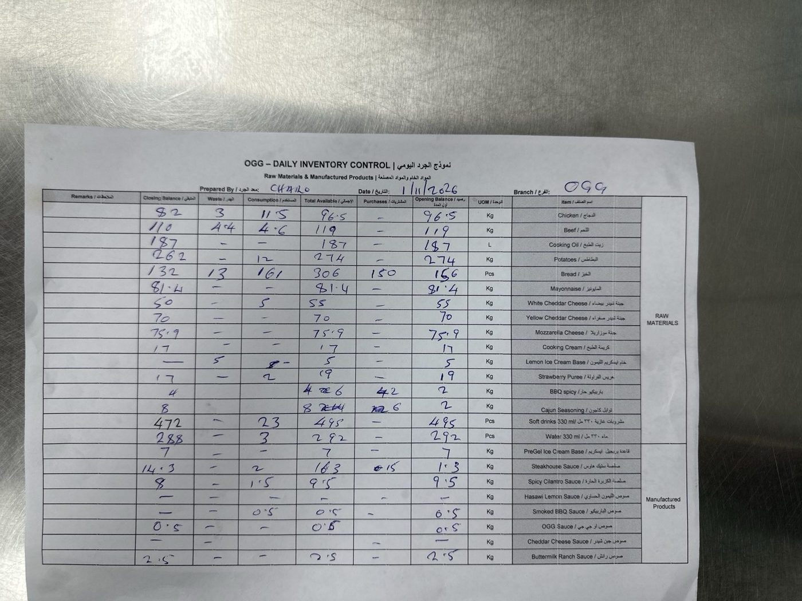
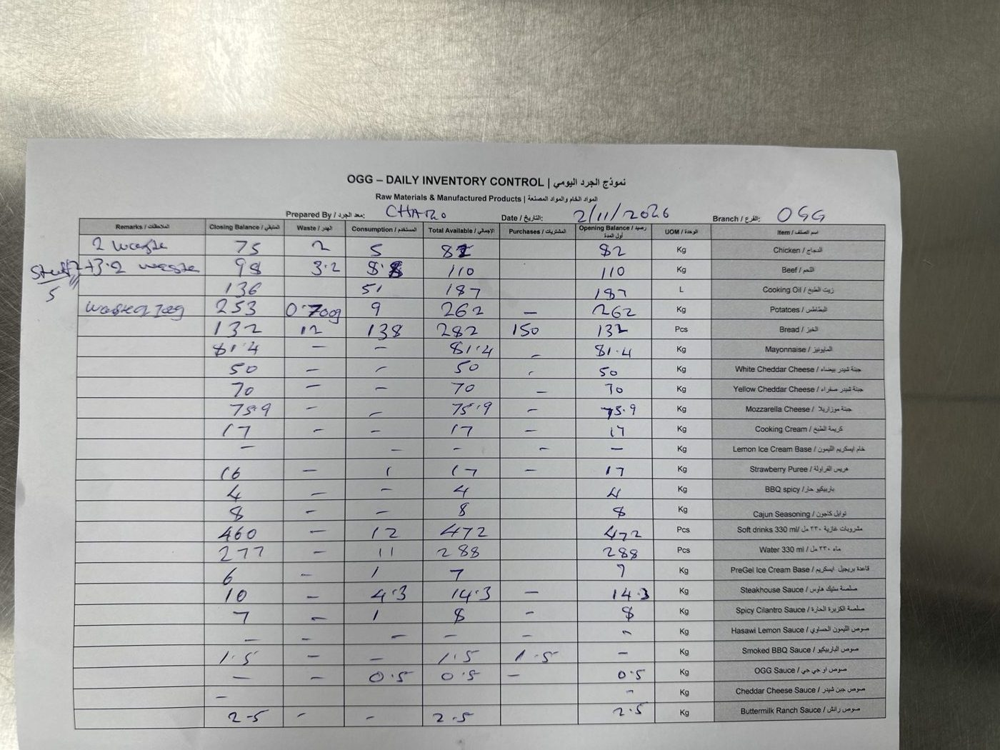

تقرير الإنجازات من 1 إلى 3 نوفمبر 2026
ملخص الفترة
تركّز العمل خلال الفترة على تحديث الوثائق الحكومية للفرع: طُبع السجل التجاري ورخصة البلدية لخدمة التوصيل، وبدأ تجديد وثيقة "واثق". تم الاتفاق مع نوف على زيارة الإدارة بخصوص الشهادات الصحية التي فيها عدة مشاكل، وعلى جولة تشمل كل الفروع لمراجعة المستندات. وعُقد اجتماع مع شركة كلوب لخدمة الطلبات المحلية لفرع Ogg والتنفيذ جارٍ، وتم التواصل مع عدة موردين للعبة السكويشي والبالونات. وأكدت شركة مكافحة الحشرات رش الفرع يوم الخميس 5 نوفمبر، إلى جانب تركيب مصائد القوارض حول الفرع. وتمت صيانة إنارة لوحة الفرع ومكينة الآيس كريم. وأظهر الجرد اليومي هدراً ملحوظاً في اللحم، ونفاد أربعة أصناف من الصوصات وقاعدة الآيس كريم.
الجرد اليومي 1 و 2 نوفمبر · المواد الخام والمنتجات المصنّعة
- استلام ومراجعة الجرد اليومي ليومي 1 و 2 نوفمبرمنجز نموذج OGG للجرد اليومي، فرع OGG، أعدّه: Charo.
الهدر
- اللحم: 4.4 كجم (1 نوف) و 3.2 كجم (2 نوف). الهدر في 1 نوفمبر يقارب المستهلك نفسه (4.6 كجم).
- الدجاج: 3 كجم ثم 2 كجم.
- الخبز: 13 حبة ثم 12 حبة.
- قاعدة آيس كريم الليمون: 5 كجم في 1 نوفمبر، وهي كامل الكمية.
- البطاطس: 0.7 كجم في 2 نوفمبر.
نفد من المخزون (رصيد 0)
- قاعدة آيس كريم الليمون
- صوص OGG (خلص في 2 نوفمبر)
- صوص الليمون الحساوي
- صوص جبن الشيدر
المشتريات
- 1 نوف: خبز 150 حبة، صوص ستيك هاوس 15 كجم، توابل كاجون 6 كجم، باربكيو حار 2 كجم.
- 2 نوف: خبز 150 حبة، صوص باربكيو مدخن 1.5 كجم.
أعلى استهلاك
- الخبز: 161 ثم 138 حبة.
- زيت الطبخ: 51 لتر في 2 نوفمبر.
- المشروبات الغازية: 23 ثم 12 حبة.
- الدجاج: 11.5 ثم 5 كجم.
الماء (1 نوف): الافتتاحي 292 والمستهلك 3، فالمفروض الختامي 289، والمكتوب 288.
البطاطس (2 نوف): الهدر 0.7 كجم ما انخصم من الرصيد؛ 262 − 9 = 253 والمفروض 252.3.
الجدول الكامل للجرد
| الصنف | الوحدة | رصيد أول المدة | 1 نوفمبر | 2 نوفمبر | ||||||
|---|---|---|---|---|---|---|---|---|---|---|
| مشتريات | مستهلك | هدر | ختامي | مشتريات | مستهلك | هدر | ختامي | |||
| الدجاج | كجم | 96.5 | – | 11.5 | 3 | 82 | – | 5 | 2 | 75 |
| اللحم | كجم | 119 | – | 4.6 | 4.4 | 110 | – | 8.8 | 3.2 | 98 |
| زيت الطبخ | لتر | 187 | – | – | – | 187 | – | 51 | – | 136 |
| البطاطس | كجم | 274 | – | 12 | – | 262 | – | 9 | 0.7 | 253 |
| الخبز | حبة | 156 | 150 | 161 | 13 | 132 | 150 | 138 | 12 | 132 |
| المايونيز | كجم | 81.4 | – | – | – | 81.4 | – | – | – | 81.4 |
| جبنة شيدر بيضاء | كجم | 55 | – | 5 | – | 50 | – | – | – | 50 |
| جبنة شيدر صفراء | كجم | 70 | – | – | – | 70 | – | – | – | 70 |
| جبنة موزاريلا | كجم | 75.9 | – | – | – | 75.9 | – | – | – | 75.9 |
| كريمة الطبخ | كجم | 17 | – | – | – | 17 | – | – | – | 17 |
| قاعدة آيس كريم الليمون | كجم | 5 | – | – | 5 | 0 | – | – | – | 0 |
| هريس الفراولة | كجم | 19 | – | 2 | – | 17 | – | 1 | – | 16 |
| باربكيو حار | كجم | 2 | 2 | – | – | 4 | – | – | – | 4 |
| توابل كاجون | كجم | 2 | 6 | – | – | 8 | – | – | – | 8 |
| مشروبات غازية 330 مل | حبة | 495 | – | 23 | – | 472 | – | 12 | – | 460 |
| ماء 330 مل | حبة | 292 | – | 3 | – | 288 | – | 11 | – | 277 |
| قاعدة آيس كريم PreGel | كجم | 7 | – | – | – | 7 | – | 1 | – | 6 |
| صوص ستيك هاوس | كجم | 1.3 | 15 | 2 | – | 14.3 | – | 4.3 | – | 10 |
| صوص الكزبرة الحار | كجم | 9.5 | – | 1.5 | – | 8 | – | 1 | – | 7 |
| صوص الليمون الحساوي | كجم | 0 | – | – | – | 0 | – | – | – | 0 |
| صوص الباربكيو المدخن | كجم | 0.5 | – | 0.5 | – | 0 | 1.5 | – | – | 1.5 |
| صوص OGG | كجم | 0.5 | – | – | – | 0.5 | – | 0.5 | – | 0 |
| صوص جبن الشيدر | كجم | 0 | – | – | – | 0 | – | – | – | 0 |
| صوص الرانش | كجم | 2.5 | – | – | – | 2.5 | – | – | – | 2.5 |
منقول من نماذج الجرد المكتوبة بخط اليد. ملاحظات النموذج في 2 نوفمبر: "2 waste" للدجاج، "3.2 waste" و "Staff 5" للحم، "wasted 700g" للبطاطس.
صور نماذج الجرد


الوثائق والتراخيص الحكومية
- طباعة السجل التجاريمنجز
- طباعة رخصة البلدية لخدمة التوصيل للمنازلمنجز
- تجديد وثيقة "واثق"قيد المعالجة الطلب تحت المعالجة، وننتظر صدور التجديد.
- جولة على جميع الفروع لتحديث المستنداتمجدول تم الاتفاق مع نوف على زيارة كل الفروع، وتحديث المستندات كاملة، ومراجعة جميع الوثائق الحكومية. لم تُنفّذ بعد.
الشهادات الصحية
تمت مناقشتها مع نوف، وتقرر رفعها للإدارة في زيارة يوم الثلاثاء.
- زيارة الإدارة يوم الثلاثاء لمعالجة الشهادات الصحيةمجدول
السلامة الصحية ومكافحة الآفات
- رش الفرع من الحشراتالخميس 5 نوفمبر ردّت شركة مكافحة الحشرات وأكدت موعد الرش.
- صناديق طُعم ولواصق للفئران حول الفرعتم الطلب طلب تركيب صناديق طُعم خارج الفرع ومن حوله، فيها طُعم حلاوة ولواصق للفئران.
صيانة الفرع
- صيانة إنارة لوحة OGG الخارجيةمنجز تمت الصيانة برافعة، واللوحة مضيئة بالكامل.
- صيانة مكينة الآيس كريممنجز


الطلبات المحلية والتوصيل قيد التنفيذ
- اجتماع مع شركة كلوب للطلبات المحلية لفرع Oggجارٍ التنفيذ الأستاذ يوسف · تم الاجتماع، والتنفيذ جارٍ.
المشتريات والموردين
- التواصل مع عدة موردين للعبة السكويشي والبالوناتمنجز جمع العروض من أكثر من مورد للمقارنة.
مستلزمات الفرع
- توفير دبل فيس للفرعمنجز
- توفير ورق الطباعة الحراري للفرعمنجز
شؤون الموظفين
- رفع إجازة مرضية للموظف دانيال عبر منصة اكتفاءمنجز إجازة ليوم واحد (الثلاثاء 3 نوفمبر)، صادرة من مجمع زمزم الطبي بتاريخ 2 نوفمبر، رقم الشهادة SLC49476.
التنسيق والتواصل
- التنسيق مع نوفمنجز تم الاتفاق على زيارة الإدارة بخصوص الشهادات الصحية، وعلى جولة تشمل جميع الفروع لتحديث المستندات.
متابعات قادمة نقلناها من اليوم
- إعادة طلب الأصناف النافدة: قاعدة آيس كريم الليمون، صوص OGG، الصوص الحساوي، صوص الشيدر
- مراجعة سبب الهدر المرتفع في اللحم مع فريق المطبخ
- تصحيح أرقام الماء والبطاطس في نماذج الجرد · Charo
- زيارة الإدارة يوم الثلاثاء ومعالجة مشاكل الشهادات الصحية · مع نوف
- تحديد موعد الجولة على الفروع، وتجهيز قائمة المستندات المطلوب مراجعتها · مع نوف
- متابعة صدور تجديد "واثق"
- الخميس 5 نوفمبر: حضور رش الفرع، والتأكد من تركيب صناديق الطُّعم واللواصق · شركة مكافحة الحشرات
- متابعة نتائج الاجتماع مع شركة كلوب وخطوات تفعيل الطلبات المحلية لفرع Ogg
- مقارنة عروض موردي السكويشي والبالونات واختيار الأنسب